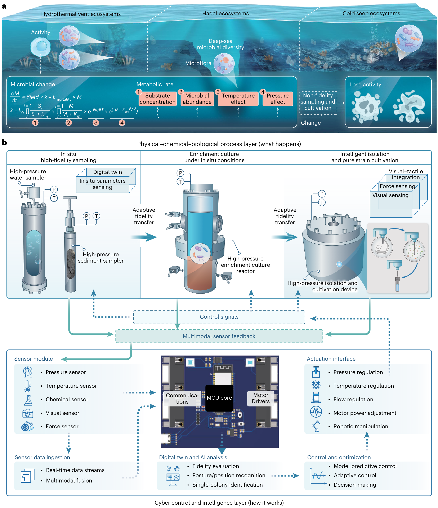
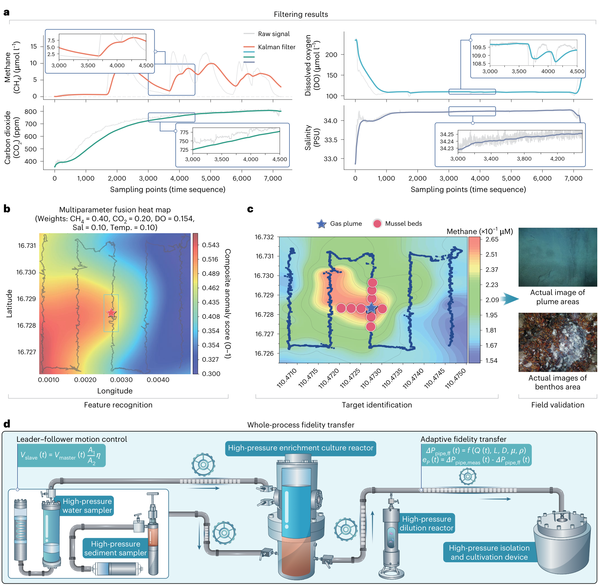
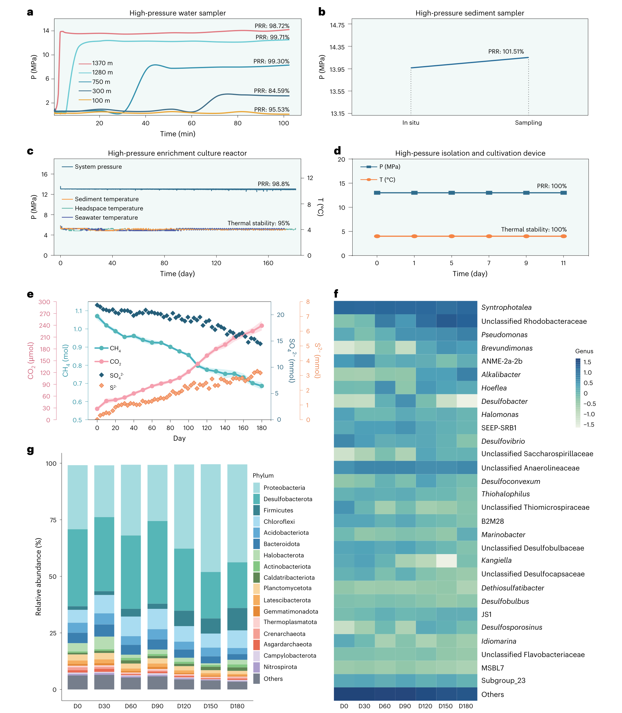
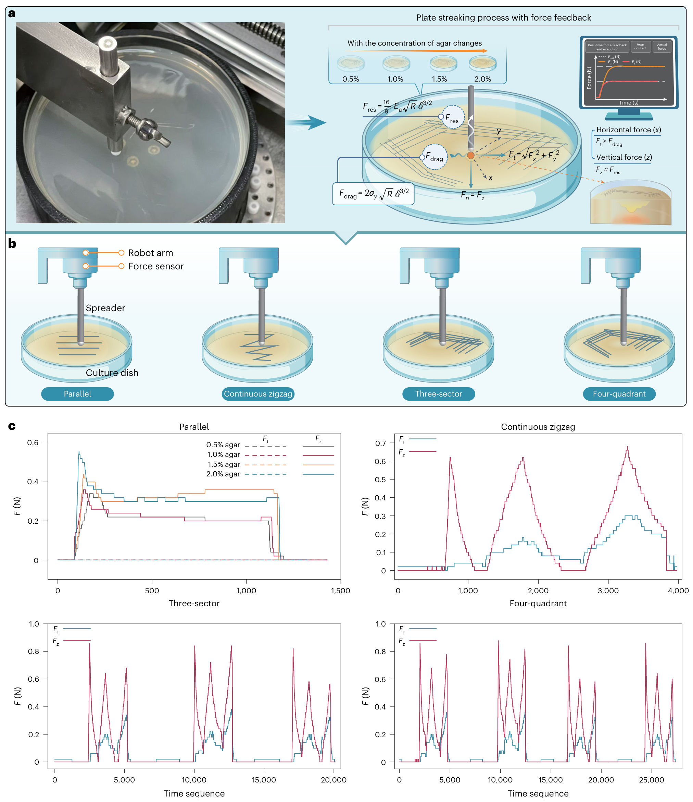
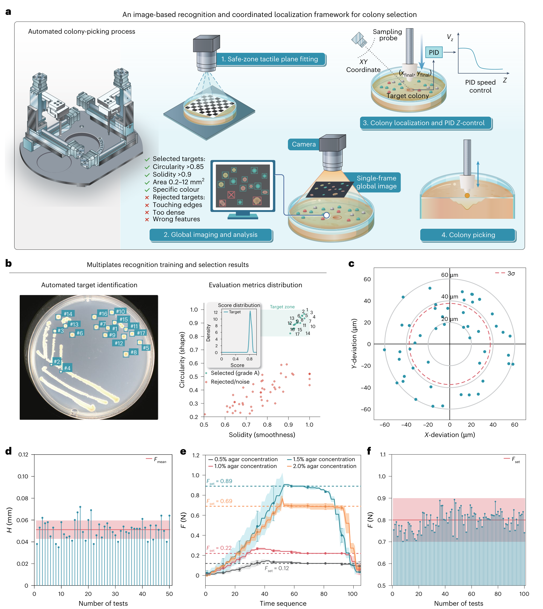
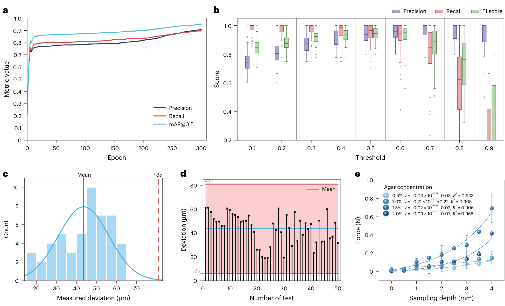
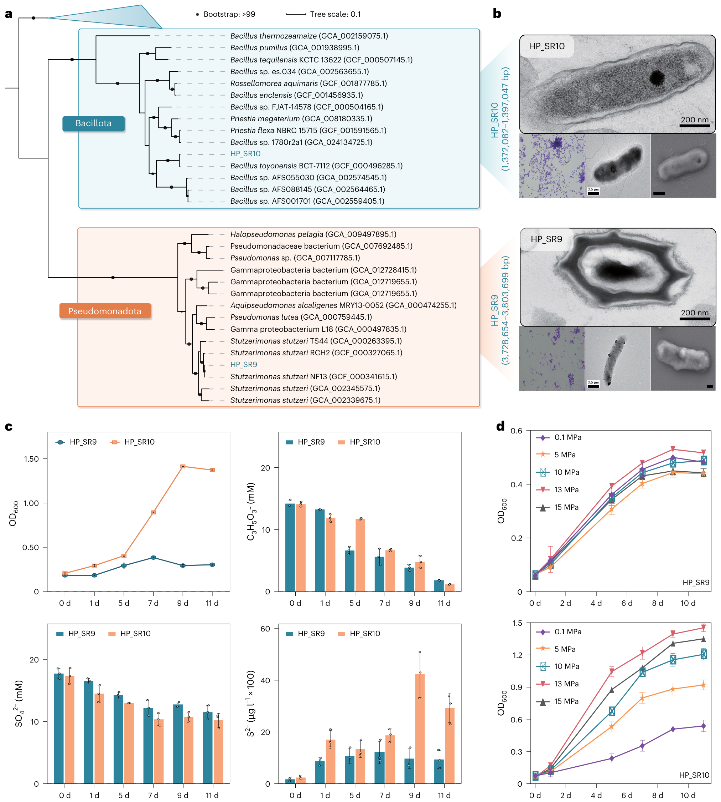
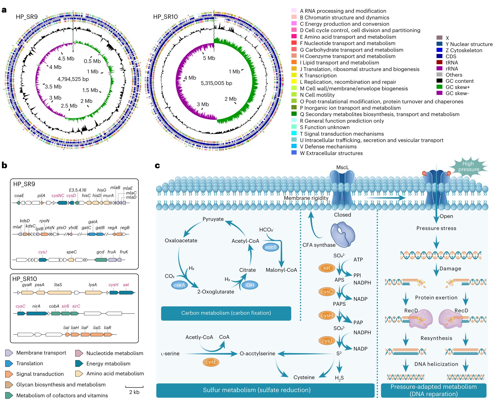

FIG. 1
先保住环境，再谈获得微生物
整篇论文的主线是“环境连续性”：样品换容器、上船、进实验室、被机器人操作时，都尽量不让生存条件突然改变。

打开高清全图 ↗ · 原图裁自所提供 PDF，去除长图注；解释为本页中文整理。
通过多传感器、保压转移与视觉—力反馈机器人，把“取到样品”延伸为“在受控高压环境里培养并挑出活菌”。
深海微生物不是取上来就能照常培养：压力、温度、营养和共生关系的改变会筛掉一部分生物。作者搭建 DISCUSS，将海底环境信号作为后续培养参照，在保压条件下富集，再用机器人识别、划线和挑取菌落。贡献主要在贯通全流程的系统工程与闭环操作。
阅读范围：用户提供的 33 页 PDF 中的正文、方法与 10 张扩展图（末尾影像式报告表未逐项核查）；发表日期以出版社网页核实。原 PDF 日期仍为占位符，出版社当前未列卷页。补充材料独立文件、数据集和代码未下载运行。下文明确区分作者结论、图中证据和本页判断；论文内容仅作为研究材料。
整篇论文的主线是“环境连续性”：样品换容器、上船、进实验室、被机器人操作时，都尽量不让生存条件突然改变。

感知不是只记录数据：先据环境信号决定何时何地采样，再用反馈协调不同设备之间的交接。

这张图把保压、温控曲线与 180 天的化学变化和群落演替连接起来，是环境重建有效性的关键证据。

培养基高低不平、软硬不同，只命令针尖到固定高度会有刺穿风险。作者用视觉规划路径，用力反馈调整接触。

检测到一个物体不代表应该操作它：与边缘接触、黏连、过密或形状异常的对象会被剔除。

这张图同时包含模型训练、阈值选择与机械误差；三者需要各自的样本单位和分母。

两株菌的形态、代谢和压力响应组成生物验证。其中压力梯度生长曲线比基因注释更直接。

基因组把表型联系到候选功能，但存在某个基因并不证明它在高压下被激活，更不证明保压流程独有地保住了它。

| 问题 | 本文证据 | 可支持的结论与缺口 |
|---|---|---|
| 回收率真的提高多少？ | 讨论报告 34 株分离物、属水平可培养率 7.7%，并与文献常见 <1% 比较；其中 11 株 16S 相似度 <98.65%。 | 支持取得更多候选分离物的作者报告；分母与补充图 8 的计算细节本次未核查。没有这里可核实的同源样品随机配对常规流程，不能直接说提升 7.7 倍；低 16S 相似度也不是完成新种命名。 |
| 保存了原始生态吗？ | 180 天活动、化学变化、群落演替及两株表型。 | 支持特定条件下维持和选择活跃群体。群落构成本身变化，不能把“环境参照培养”写成所有物种及其比例不变。 |
| HP_SR10 是否严格嗜压？ | 正文称 obligately piezophilic，图 7d 在常压下仍有明显 OD 增加。 | 可稳妥称高压偏好菌株。常压不能回收的更强结论需要直接回收对照、连续传代与活菌测量。 |
| 识别成功是否等于分离成功？ | 94.6% accuracy、mAP@0.5=0.916、F1=0.88；形态阈值筛选及机械测试。 | 三个视觉指标不能混算。需要分别给出检测、挑取、单克隆纯化、存活和最终培养成功的分母；自动化也不等于零污染。 |
| 约 5,000 是什么样本？ | 扩展图 9 报约 5,000 平板及 50,000–60,000 菌落；图 6b 称验证集 4,929 张平板图，每箱取 50 图。 | 需核对总数据、训练与验证划分的关系，以及同板、同批次是否跨集合。不能把菌落数当作独立平板数，或从一组曲线推断外部部署泛化。 |
| 适用于任何极端环境吗？ | 核心生物实验为 13 MPa、4°C 冷泉；方法列采样至 2,000 m、富集腔耐压 30 MPa、操作腔 20 MPa。 | 讨论提到 70 MPa 算法和改造至 350°C 的延伸，不能替代全链路在这些条件下的验证。温度探头量程也不等于整机工作范围。 |
| “数字孪生”贡献了多少？ | 多传感器、滤波、同步转移、PID/自适应控制、视觉和力融合被集成进系统。 | 系统贡献清楚；缺少逐模块开关消融及预测误差/控制成本的统一比较，无法把生物回收增益单独归于数字孪生或某个 AI 模块。 |
以上是本页建议，不是论文已完成的实验。
最可迁移的思想是“让感知负责维持对象所需条件”，而不仅提高读数精度。系统的成功指标应落到最终任务：这里是获得可生长且可表征的菌，而不是只报压力波动或识别准确率。
对仿生无人机或多模态感知而言，可借鉴分层控制：慢变化环境信号用于任务选择，快速接触或运动反馈用于即时修正；不同速率的传感器先做时间对齐。本页仅作架构类比，本文没有验证飞行或射频定位。
深海微生物难培养，一个原因是从海底到实验室的环境突变。作者用 DISCUSS 把多传感器选点、保压取样与转移、连续流高压培养和机器人挑菌接起来。视觉识别菌落并排除难操作对象，力反馈帮助针尖适应软培养基。
他们展示了 180 天富集以及两株已知物种菌株的压力响应。最强的贡献是环境连续性的工程实现与生物产出相连接；要谨慎的是，94.6% 是识别指标，基因注释是机制线索，且当前数据并未充分证明普遍回收增益、零污染或严格嗜压。
图 3：部分保压率低于图注所说的 98%；温度稳定性 95% 与笼统“偏差 <2%”不宜混用。图 4：正文低力范围、图注安全带与波形峰值需按工况拆分；b 图注与实际四条轨迹图的角色不完全对应。图 5–6：50/100 次重复、X/Y 分量/径向误差、压入深度/深度偏差及 ±3σ/置信区间需要统一定义。图 7：常压生长曲线与“严格嗜压”措辞存在张力。图 8：注释路径不等于表达或因果机制。以上均按所提供版本标注，属于证据解释限制，不据此推断研究动机。
本页展示全部 8 张主图。扩展图 1–2：硬件与耐压传感器；3：现场环境与传感核验；4：保压和热管理；5：连续流培养；6：自动分离流程；7：划线柔顺控制；8：标定、分割、筛选及挑后验证；9：约 5,000 平板和多样菌落形态；10：分割模型的定性比较。扩展图提供实现与补充可视化，但不应把代表图当作独立定量排名。
原文声明数据、算法和模型可通过 Zenodo 存档和 作者 GitHub 仓库获得。本次未核验仓库文件完整性、数据划分或执行复现，亦未读取独立 Supplementary Information；有关补充图 8 的回收率只按正文转述。